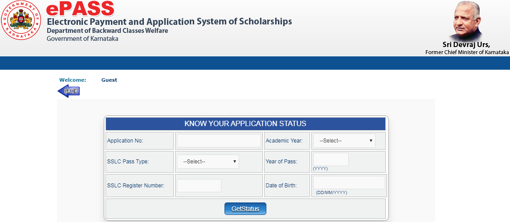

Vidyasiri Scholarship 2021-202: Vidyasiri (KarePass) is a kind of scholarship plan, provided by the Department of Backward Classes Welfare, Government of Karnataka. This scholarship is specially produced for SC/ST/OBC/PWD scholars who are pursuing an education in post matriculation programs. The main goal of this scholarship is the educational growth and enhancement of the learners of Karnataka who are having weak financial status and belongs to SC/ST/OBC/PWD.
Furthermore, the Karnataka Govt is striving to make the scholarship distribution arrangement easy through ePass (Electronic Payment and application system of Scholarships). The ePass system unites all welfare departments such as treasury, databases of Secondary Scholarship Leaving Certificate (SSLC), colleges and banks to resistant free distribution of scholarship to stipendiary students.
Students can also find more Scholarship Articles for 12th passed, 10th passed Students and many more.
The Karnataka government grants this scholarship in three patterns.
- Free Hostel Accommodation/Fee for Post-Matric Courses
- Prathibha Puraskar Scholarship for SSLC/Secondary PUC
- Full Course Fee concession for PMS FAAS, FC, and NUR
All these scholarships are available for the students who are pursuing post-matric programs, after class 10th, across the state. Besides, the various schools and colleges of Karnataka are connected with this scheme.
Latest Update:
The Fresh & Renewal Registration Form 2019-20 for PMS, FAAS, FC & NUR is now open for applicants.
To print your Vidyasiri Epass Scholarship Application, click here

To know your Vidyasiri Epass Scholarship Status, click here

Vidyasiri Scholarship Dates
All the important dates related to Vidyasiri Scholarship are given below in a tabular form. Students can check these dates and eligible candidates can apply for this scholarship as per instructed in the Vidyasiri Scholarship portal.
| Events | Dates |
| Fresh Hostel Registration Released date | May |
| Last Date to Apply for Hostel | August |
| Prathibha Purskar scholarship notification Released On | June |
| Last Date to Apply for Prathibha Purskar Scholarship | July |
| Fresh & Renewal Registrations for PMS FAAS, FC, and NUR Dates |
October |
Vidyasiri Scholarship Karnataka Details
| Event | Details |
| Scholarship provider | Karnataka State Government |
| Scholarship Scheme Name | Vidyasiri Scholarship 2019 Epass Karnataka |
| Scholarships granted to students of | 9th,10th, 11th, 12th, Graduate, Post Graduate |
| Scholarship Amount | 1500/- per month |
| Scholarship Apply Date | September |
| Deadline to apply | October |
| Mode of application | Online |
Vidyasiri Scholarship Eligibility Criteria
To apply for Vidyasiri Scholarship, students have to satisfy certain requirements which primarily depend on their domicile, academic qualification, category(SC/ST/OBC/PWD) and family income. Know about the eligibility criteria which are necessary to be fulfilled for this scholarship here. As we already know there are three types of scholarship offered under this scheme. Let us discuss the eligibility for all three types of schemes.
Free Hostel Accommodation Scheme
- Karnataka government presents free Hostel accommodation/fee for the merit listed students who belong to backward classes such as SC/ST/OBC/PWD.
- The scheme is available for post-matric programs after students have passed Class10th.
Prathibha Purskar Scholarship
To perceive D. Devaraja Urs Prathibha Purskar an applicant must have to fulfill these eligibility requirements:
- The applicant should be a permanent resident of the Karnataka state.
- Applicant belonging to underprivileged class such as (SC/ST/OBC/OWD) related to Category-1, Category 2A, 3A, and 3B.
- The applicant who has scored 90% or above in SSLC/ Secondary PUC or equivalent exam held in March/April 2019.
- The annual income of the family of the candidate should be: For Category-1 = up to Rs 2.50 lakhs, For Category 2A, 3A and 3B up to Rs 1 Lakh.
- The applicant must study in Karnataka Govt./ Private Schools/Colleges.
- The Pratibha Purskar facility is proposed only a one-time per student for similar courses.
Full Course Fees Scholarship
The applicants need to fulfill the following requirements to be eligible for full course fees concession (vidyasiri fee concession amount).
- The applicant should be a permanent citizen of Karnataka State.
- For SC / ST candidates, the annual income of the parents/guardians/family should be up to 2 lakh per year.
- For backward class/PWD candidates, the income of parents/guardians/family should be up to 1 lakh per year.
- Applicants should be pursuing in post-matric programs approved by the Karnataka Government.
- To apply for this scholarship, the applicant should have 75% attendance.
Vidyasiri Scholarship Application Form
The online application Vidyasiri Scholarship form 2019 is available on the official website of KarePass (Karnataka electronic Payment and application system scholarship) Portal. When starting to vidyasiri scholarship apply online, read all instructions/guidelines thoughtfully for the particular scheme. Devaraj urs scholarship online application form can be applied online. As the incorrect submission of the form may lead to its cancellation.
- Visit KarePass.cgg.gov.in/the official website of Vidyasiri/KARePass.
- At the homepage, three choices will be provided
- Free Hostel Registration
- Pratibha Purshkar Registration and
- Fresh & Renewal Registrations for PMS FAAS, FC, and NUR.
- Select the proper option and click on “Apply Now” given on the next page.
- After then, fill the personal details, Annual Income details, Aadhaar no, SSLC details, etc.
- A candidate with a disability has to apply in the PWD class.
- Now press the “Submit” button for the final submission. The system will automatically generate an application number.
- Note the application numbers to check the status of the application form in the future.
Note: Applicants who are applying from their colleges and institutions should apply one week before the application ending date.
Documents Required While Filling Vidyasiri Application Form
The following documents are needed while filling of the Vidyasiri Scholarship 2019 application form.
- Family Annual Income certificate issued by Tahsildar or Sub-Tahsildar.
- SC/ ST/ OBC/ PWD certificate issued by Tahsildar or Sub-Tahsildar.
- Senior Secondary leaving certificate (SSLC)
- School or College issued Transfer Certification. (TC)
- Candidate bank passbook copy for Account details.
- Latest passport photographs of the applicant.
How To Check Vidyasiri Scholarship Application Status?
Get the information on how the status of the applied form for the scholarship can be checked using your application number in the KARePass ePass portal.
- To review the scholarship application status, the candidate has to visit the official website KarePass.cgg.gov.in/.
- Click on the link to “Student Services >> Vidyasiri Application status”.
- Next, the candidates have to enter their application numbers, academic year, SSLC details and date of birth.
- Finally, click on the “Get Status” option and the scholarship application status will be displayed on the screen.
Vidyasiri Scholarship Reward Amount
Check the vidyasiri scholarship amount for each of the three schemes as per given below:
- Free Hostel Accommodation Amount: Hostel Accommodation/Fee is provided by the Karnataka government to chosen applicants based on the merit list.
- PMS FAAS, FC and NUR Scholarship Amount: Consequently, about 20000 applicants will take benefit of this scholarship every year. The scholarship covers the full course fee concession in which the applicant is pursuing. Whenever the eligible applicant will be shortlisted for scholarship, the sum amount will be transferred directly to his/her accounts.
- Pratibha Purskar Amount: The Pratibha Purskar contributes Rs.10,000 to 1000 SSLC students and Rs. 15,000 to 500 Secondary PUC students based on merit.
| Category/Class | Number of students | Amount |
| SSLC | 1000 | Rs.10,000 |
| Secondary PUC | 500 | Rs.15,000 |
Post Matric Courses Offered By Vidyasiri Scholarship
Scholars who are seeking the following courses can avail of this scholarship scheme as per given below.
Group A comprises the following courses:
- Degree and Postgraduate level courses including M.Phil, P.hD. and Post Doctoral research in Medicine (Allopathic, Indian and other recognized systems of medicines), Engineering, Technology, Planning, Architecture, Design, Fashion Technology, Agriculture, Veterinary and Allied Sciences, Management, Business Finance/ Administration, Computer Science/ Applications.
- Commercial Pilot License (including helicopter pilot and multi-engine rating) courses are also included.
- Post Graduate Diploma courses in various branches of management and medicine.
- C.A/ I.C.W.A/C.S. /I.C.F.A etc.
- M.Phil., PhD and Postdoctoral Programmers (D.Litt., D.Sc., Etc.)
- L.L.M.
Group B comprises the following courses:
- Graduate courses leading to Degree, Diploma, Certificate in areas like Pharmacy (B. Pharma), Nursing (B Nursing), LLB, BFS, other paramedical branches like rehabilitation, diagnostics etc., Mass Communication, Hotel Management & Catering, Travel/Tourism/Hospitality Management, Interior Decoration, Nutrition & Dietetics, Commercial Art, Financial services (e.g. Banking, Insurance, Taxation etc.) for which entrance qualification is minimum Sr. Secondary 10+2.
- Post Graduate courses not e.g. MA/M.Sc., /M.com/ M.Ed., /M. covered under Group Pharma., etc.
Group C: All the programs under Group A and leading to a graduate degree not covered B e.g. BA/B.Sc./B.Com etc.
Group D: All post-matriculation level non-degree programs for which admission qualification is High School (Class X) e.g. Senior Secondary Certificate (Class XI and XII); both general and vocational stream, ITI courses, 3-year diploma courses in Polytechnics, etc.
Contact Details
Karnataka Backward Classes Welfare Department
No.16/D, 3rd Floor, Devraj Urs Bhavan,
Millers Tank Bed Road, Vasanth Nagar,
Bangalore – 560052.
Hostel Online Phone: 8050370006
Scholarship Online Phone: 8050770005
Prathibha, IAS/KAS Online Phone: 8050770004
Email ID: [email protected]
FAQ’s on Vidyasiri Scholarship
Question 1.
What is a Vidyasiri scholarship?
Answer:
Vidyasiri (KarePass) is a kind of scholarship plan, provided by the Department of Backward Classes Welfare, Government of Karnataka. This scholarship is specially produced for SC/ST/OBC/PWD scholars who are pursuing an education in post matriculation programs.
Question 2.
What documents are required to apply for this scholarship?
Answer:
The required vidyasiri scholarship documents to apply for the scholarship are SSLC Marks certificate, passport sized Photograph of the student, Aadhar Card, Annual Income proof certificate, Caste Certificate, Income Declaration Form and Ration Card
Question 3.
Who is eligible to apply for Vidyasiri Scholarship Schemes?
Answer:
Students fulfilling the Scheme criteria of several departments are qualified to apply for these scholarships. These are available on the Home Page of the Portal under Notification/GO menu.
Question 4.
How can a student get KARePass scholarship?
Answer:
Follow the steps below to apply for KARePass Scholarship.
- Visit the official website karepass.cgg.gov.in.
- Click on the “Apply Online” link.
- Now Click on the link for Fresh Application.
- Fill all the required details.
- Upload mandatory documents that are required.
- Take a printout of the application form after submission.
Question 5.
What is the Vidyasiri Scholarship last date 2019-20 to submit applications form online?
Answer:
Closing dates for receiving of various scholarship applications are available in Karnata ePass Portal.
Question 6.
Which fields in the application form are compulsory?
Answer:
Fields provided with a red asterisk (*) mark are compulsory fields.
Question 7.
How to check the status of the application form?
Answer:
Students can check the status of the Online Application form by selecting the “Know Your Status” link from the Student Services drop-down list. And enter the appropriate details in specified fields.